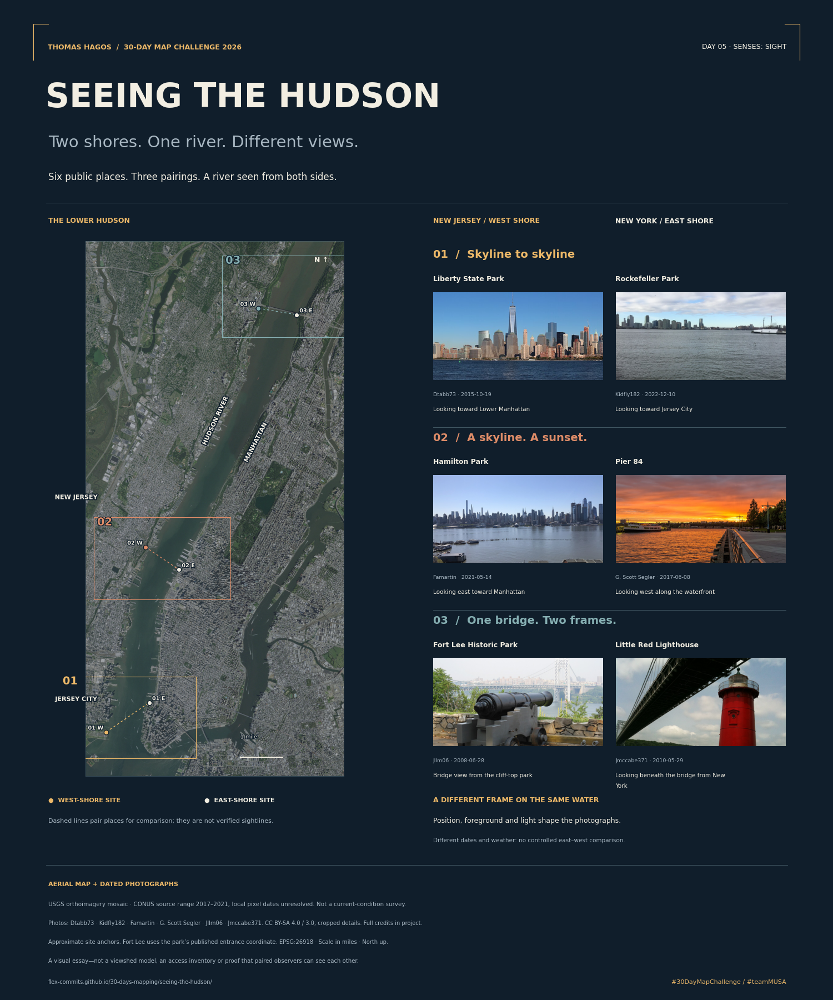
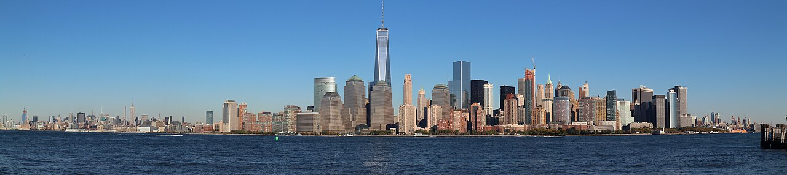
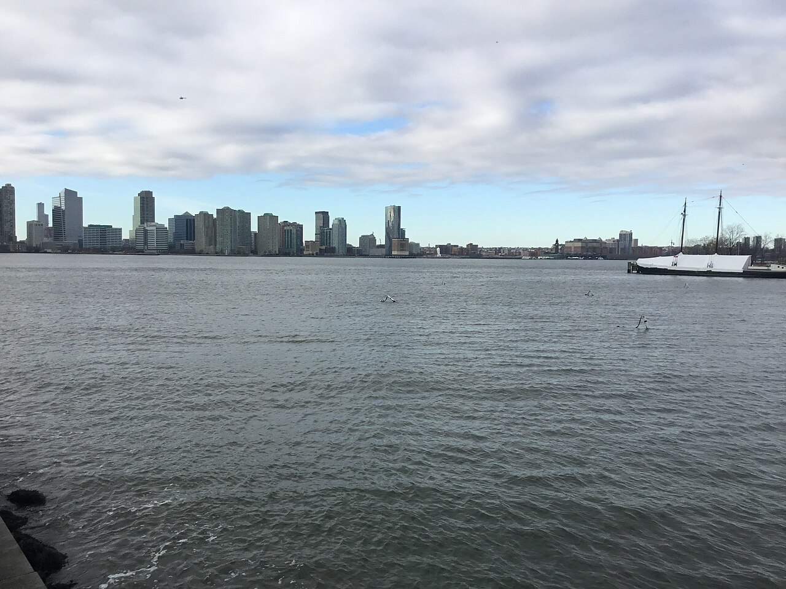
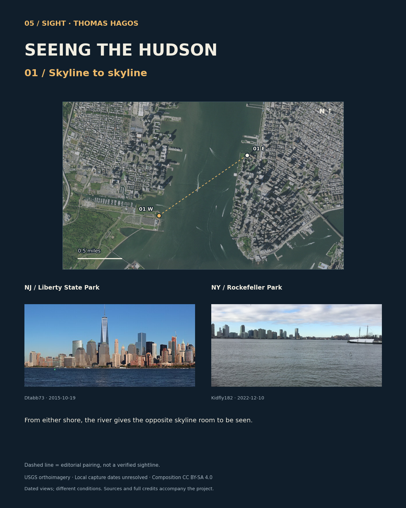
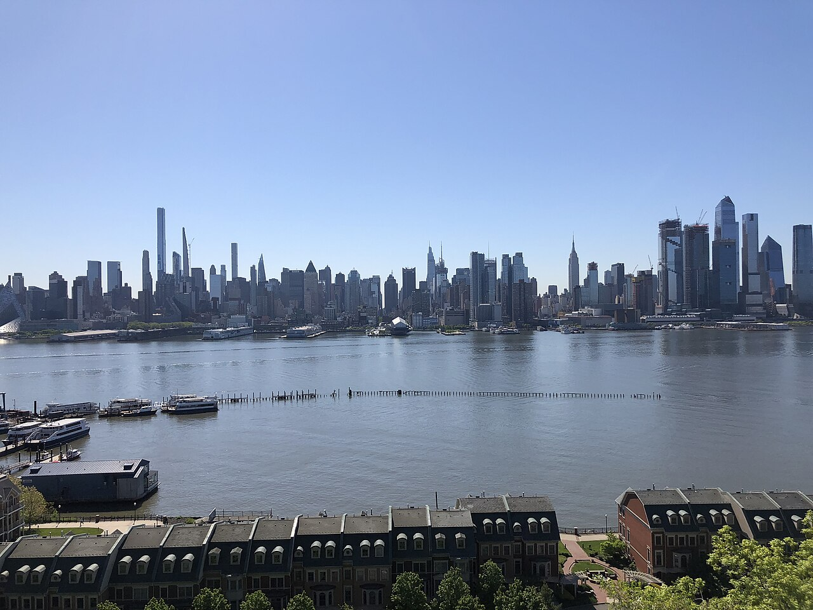
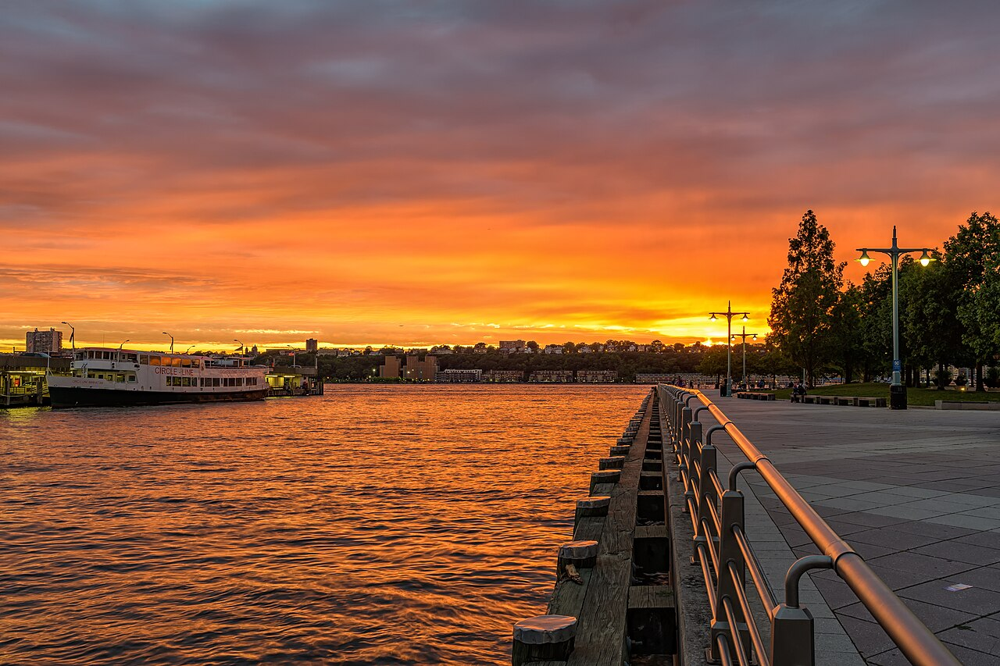
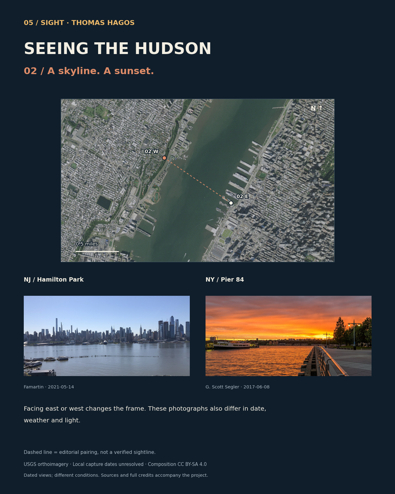
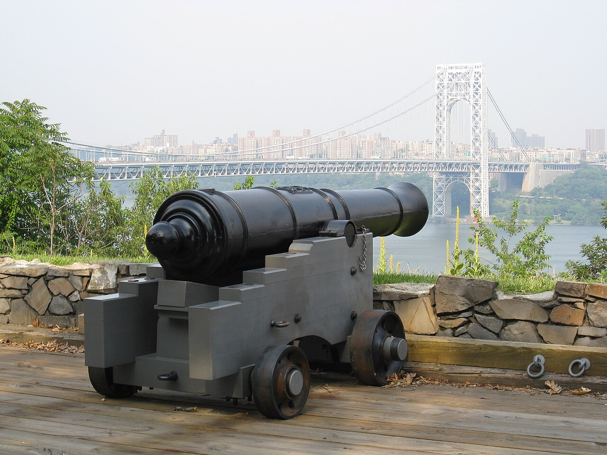
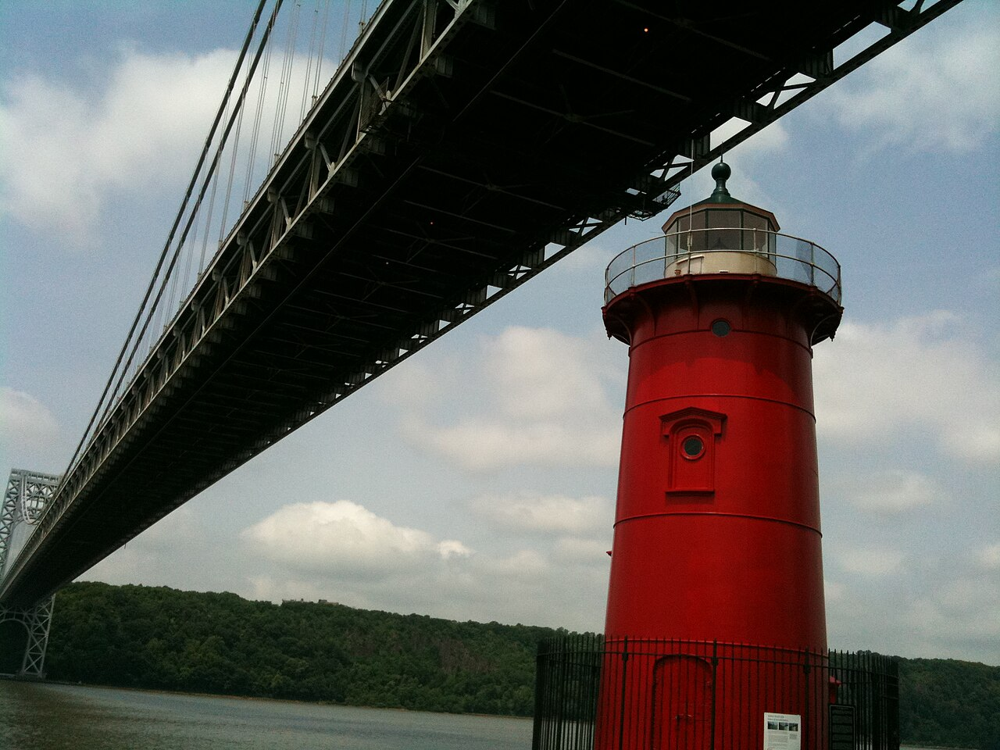
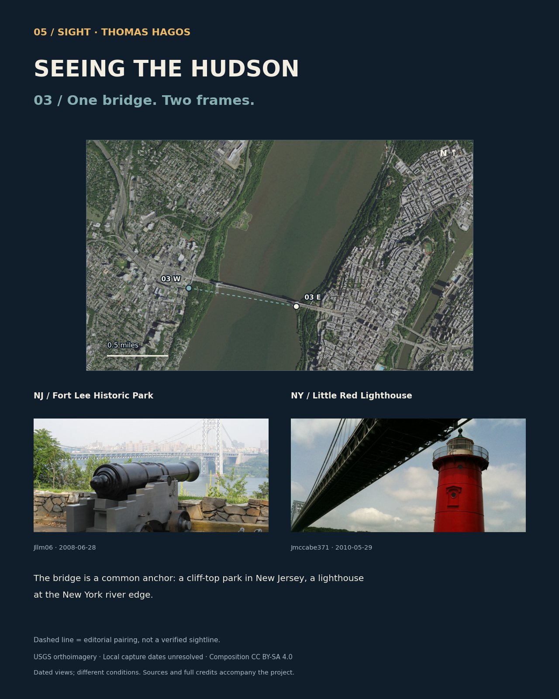

Seeing
the Hudson.
Two shores. One river. Different views.
Same river. Different picture.
I paired six public places on the New York and New Jersey shores. Two skylines, a sunset, a bridge… a different view from each side.
Then the links between them: the bridges, tunnels and trains the Port Authority built or took over to join the two shores.


Skyline to skyline
From either shore, the river gives the opposite skyline room to be seen.
Port Authority link: Lower Manhattan’s skyline is anchored by the World Trade Center, a Port Authority site. PATH trains run under the river between these two shores.

Looking toward Lower Manhattan
The river opens up a wide view of Lower Manhattan.
Photograph: Dtabb73 · 2015-10-19 · CC BY-SA 4.0. Resized or cropped. Original photo linked above.

Looking toward Jersey City
Across the water, Jersey City has a skyline of its own.
Photograph: Kidfly182 · 2022-12-10 · CC BY-SA 4.0. Resized or cropped. Original photo linked above.
Locate these two places

The line connects the two selected places; visibility between them has not been tested. Locations are approximate. Fort Lee uses the park entrance. Exact local capture dates for the USGS aerial imagery are unavailable.
A skyline. A sunset.
Facing east or west changes the frame. These photographs also differ in date, weather and light.
Port Authority link: the Lincoln Tunnel runs under this stretch of river, from Weehawken to Midtown and the Port Authority Bus Terminal.

Looking east toward Manhattan
Manhattan’s towers rise behind the river and piers.
Photograph: Famartin · 2021-05-14 · CC BY-SA 4.0. Resized or cropped. Original photo linked above.

Looking west along the waterfront
The sunset turns the water orange beside the pier.
Photograph: G. Scott Segler · 2017-06-08 · CC BY-SA 4.0. Resized or cropped. Original photo linked above.
Locate these two places

The line connects the two selected places; visibility between them has not been tested. Locations are approximate. Fort Lee uses the park entrance. Exact local capture dates for the USGS aerial imagery are unavailable.
One bridge. Two frames.
The bridge is a common anchor: a cliff-top park in New Jersey, a lighthouse at the New York river edge.
Port Authority link: the George Washington Bridge was built by the Port Authority and opened in 1931. The lighthouse sits at the foot of its New York tower.

Bridge view from the cliff-top park
A cannon in front. The bridge beyond it.
Photograph: Jllm06 · 2008-06-28 · CC BY-SA 4.0. Resized or cropped. Original photo linked above.

Looking beneath the bridge from New York
The lighthouse sits beneath the bridge.
Photograph: Jmccabe371 · 2010-05-29 · CC BY-SA 3.0. Resized or cropped. Original photo linked above._01.JPG){kind=link}
Locate these two places

The line connects the two selected places; visibility between them has not been tested. Locations are approximate. Fort Lee uses the park entrance. Exact local capture dates for the USGS aerial imagery are unavailable.


Where the views come from.
What the map shows
The map marks six public places and pairs them across the river. Locations are approximate. Five come from the photographers’ coordinates; Fort Lee uses the park’s published entrance location. Maps face north and scales use miles. Projection: NAD83 / UTM zone 18N (EPSG:26918).
The dashed lines connect the places I chose to compare. I haven’t calculated what is visible between them or checked current access at every site.
What the dates mean
The aerial maps come from USDA/USGS. The service lists U.S. source imagery from 2017–2021 but does not give exact capture dates for these locations. Its June 2024 update date describes the service, not when the photos were taken. I darkened the map layer to keep labels readable; near-black pixels show the navy background.
These photos were taken between 2008 and 2022, on different days and in different conditions. Each one has its photographer, date, source and Creative Commons license listed beside it.